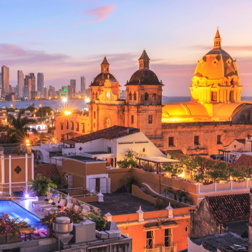
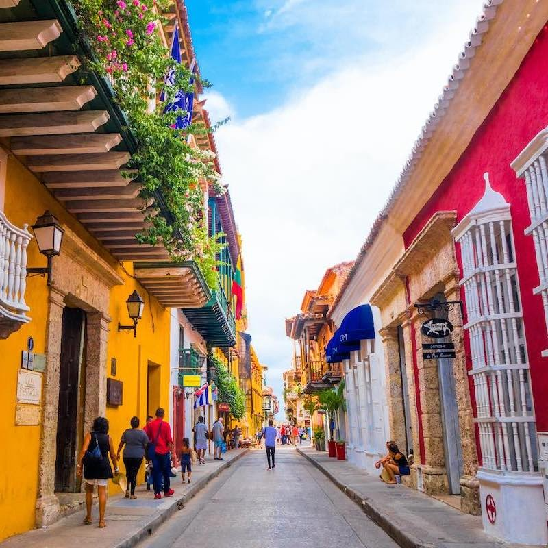

Colombia
From Coffee Fields to Caribbean Shores, a Journey into Colombia's Rich Tapestry
My Colombian journey kicked off in Bogotá, the vibrant capital nestled in the Andes Mountains. Roaming the historic streets of La Candelaria, I encountered lively street art and vibrant markets, where artisans displayed their colorful wares. A visit to the Gold Museum allowed me to delve into Colombia's pre-Columbian history, marveling at intricate golden artifacts. Colombian cuisine delighted my taste buds with hearty dishes like ajiaco and arepas.
 From Bogotá, I ventured into the lush Coffee Triangle, where emerald-green coffee plantations stretched as far as the eye could see. I had the unique opportunity to join local coffee farmers for a day, picking ripe coffee cherries and learning about the intricate process of coffee production. The aroma of freshly roasted coffee beans filled the air as I savored the world's finest coffee in its birthplace.
Next on my journey was Medellín, a city that has undergone a remarkable transformation. Exploring Comuna 13, once one of the most dangerous neighborhoods, I witnessed the power of art and community in graffiti-covered streets and lively murals. The innovative Metrocable system provided breathtaking views of the city's lush mountainsides. Medellín's Botanical Garden offered a peaceful oasis within the bustling city.
Heading north, I arrived in Cartagena, a coastal gem on the Caribbean Sea. The Old Town's cobblestone streets, vibrant facades, and historic fortifications took me back in time. A horse-drawn carriage ride allowed me to soak in the colonial charm. Basking in the Caribbean sun on Playa Blanca's pristine beaches was a perfect way to unwind.
 My Colombian adventure continued with a visit to Tayrona National Park, a tropical paradise where lush jungle meets pristine beaches. Trekking through dense rainforests, I encountered exotic wildlife, including howler monkeys and vibrant toucans. Arriving at Cabo San Juan, I was greeted by turquoise waters and white sandy beaches—a true Caribbean paradise.
Leaving the coast, I ventured into the heart of the Amazon Rainforest. Navigating the mighty Amazon River aboard a traditional canoe, I was surrounded by an orchestra of jungle sounds. A visit to an indigenous village provided insights into the unique way of life in the rainforest. Nighttime excursions revealed the mesmerizing world of nocturnal creatures.
My journey concluded in Cali, the salsa capital of Colombia. I immersed myself in the infectious rhythms of salsa, taking dance lessons from passionate locals. Cali's vibrant nightlife and salsa clubs provided the perfect backdrop for showcasing my newfound dance skills.
As I look back on my journey through Colombia, I'm filled with gratitude for the diverse experiences, warm hospitality, and stunning landscapes this country has to offer. From the Andes to the Amazon, from historic cities to pristine beaches, Colombia's rich tapestry is a testament to its resilience and beauty.
I hope this journey has ignited your curiosity about Colombia, a country that has transformed itself into a top travel destination. As I continue to explore the Americas, I look forward to sharing more adventures and stories with you. Until then, adiós, amigos, and may your travels be filled with the vibrant spirit of Colombia!